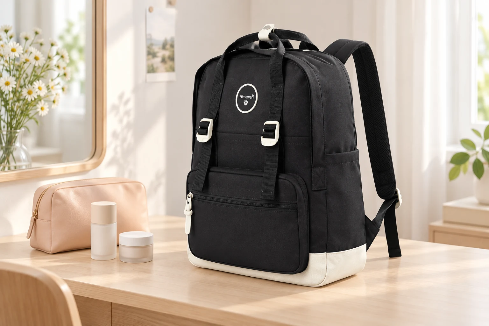

백팩 속 화장품 파우치: 뚜껑·펌프·브러시를 나눠 챙기기

가방 안의 작은 얼룩은 화장품을 꺼냈다가 다시 넣는 순간에 생기기도 합니다. 뚜껑에 남은 내용물이나 눌리는 펌프, 분말이 묻은 브러시는 같은 파우치 안에서도 서로 다른 준비가 필요합니다. 백팩 자체를 닦기 전에 매일 들고 다니는 화장품의 입구와 겉면을 살펴보세요.
오늘 밖에서 쓸 것만 펼쳐보기
집에서 사용하는 전체 구성을 그대로 옮기기보다 외출 중 실제로 꺼낼 제품을 고릅니다. 한 번도 쓰지 않은 여분 제품이 계속 남아 있다면 따로 보관할 수 있습니다. 유통·사용기한과 보관 조건은 각 제품 표시를 확인하고, 밖에서 사용하기 위한 수납과 장기 보관을 구분하세요. 용기를 줄이려고 적합성이 확인되지 않은 통에 임의로 옮겨 담기보다는 원래 휴대 가능한 포장을 활용합니다.
돌려 닫는 뚜껑과 누르는 펌프는 다르게
나사식 뚜껑은 비스듬하게 물리지 않았는지, 캡은 제자리에 닫혔는지 확인합니다. 펌프형은 잠금 기능이나 전용 캡이 있다면 제품 안내대로 사용하세요. 파우치 속 다른 용기가 펌프를 계속 누르는 배치는 피합니다. 이미 입구가 갈라졌거나 닫힘이 불안정한 용기를 테이프로 임시 고정한 채 전자기기 옆에 두지 말고, 정상적으로 닫히는 용기로 준비합니다.
브러시는 사용한 면부터 분리
브러시나 퍼프에 남은 분말이 파우치 안쪽에 묻으면 다른 제품 겉면으로 옮겨갈 수 있습니다. 도구에 맞는 커버나 별도 보관 구역을 사용하고, 젖은 도구를 그대로 밀폐해 가방 안에 오래 두지 않습니다. 관리와 건조 방법은 도구 안내를 따르세요. 브러시 끝을 꺾어 작은 칸에 맞추거나 립 제품의 열린 면이 다른 물건에 닿게 담지 않는 것도 함께 확인합니다.
파우치를 닫은 모양으로 자리 잡기
용기를 넣기 전 납작했던 파우치도 모두 담으면 두껍고 단단해집니다. 지퍼를 닫은 상태로 백팩에 놓고, 책이나 노트북이 파우치를 옆에서 압박하지 않는지 봅니다. 파우치가 있다는 이유만으로 누수가 차단된다고 생각하지 말고 전자기기와 중요한 종이에서 떨어진 자리를 정하세요. 아래쪽의 둥근 물건 때문에 기울거나 압박이 생긴다면 내용물이나 위치를 조정합니다.
밖에서 다시 담을 때 겉면 한 번
사용한 제품은 뚜껑을 닫고 입구 주변이나 손에 묻은 내용물이 겉면으로 번지지 않았는지 확인합니다. 필요한 정리는 해당 제품 안내에 맞게 한 뒤 파우치에 넣으세요. 가방 안감을 임시 받침처럼 사용하거나 백팩 위에서 분말 제품을 털지 않습니다. 용기가 샌 것을 발견했다면 우선 다른 물건과 분리하고, 새는 상태 그대로 파우치만 닫아 가방에 돌려놓지 않는 것이 좋습니다.
주말에는 빈 파우치까지 살피기
화장품을 꺼내 파우치의 모서리와 안쪽 바닥을 확인합니다. 가루나 끈적한 자국이 남았다면 파우치 자체의 관리법에 따라 정리하고 충분히 마른 뒤 사용하세요. 백팩에도 묻었다면 가방 소재에 맞는 안내를 따르며, 용제나 세정제를 바로 바르지 않습니다. 사진 속 No.1088M은 일상 가방 예시입니다. 내가 쓰는 파우치의 닫힌 크기와 실제 제품 수납 공간을 함께 확인해 자리를 정해보세요.
참고·안내
- Himawari No.1088M 제품 정보
- 실제 Himawari 제품 원본을 참조해 새로 만든 AI 연출 이미지입니다. 주변 소품은 상품에 포함되지 않으며 수납 용량을 보장하는 장면은 아닙니다.
자주 묻는 질문
방수 파우치면 화장품이 새도 괜찮나요?
파우치의 구조와 사용 조건에 따라 달라지며, 누수 차단을 일괄적으로 보장할 수 없습니다. 용기 닫힘을 먼저 확인하고 전자기기와 분리하세요.
화장품이 가방에 묻으면 바로 세제로 닦나요?
새는 용기를 먼저 분리하고 가방 관리 표시를 확인하세요. 원단과 코팅에 맞는 방법을 확인하기 전에 세정제나 용제를 바로 사용하지 않습니다.